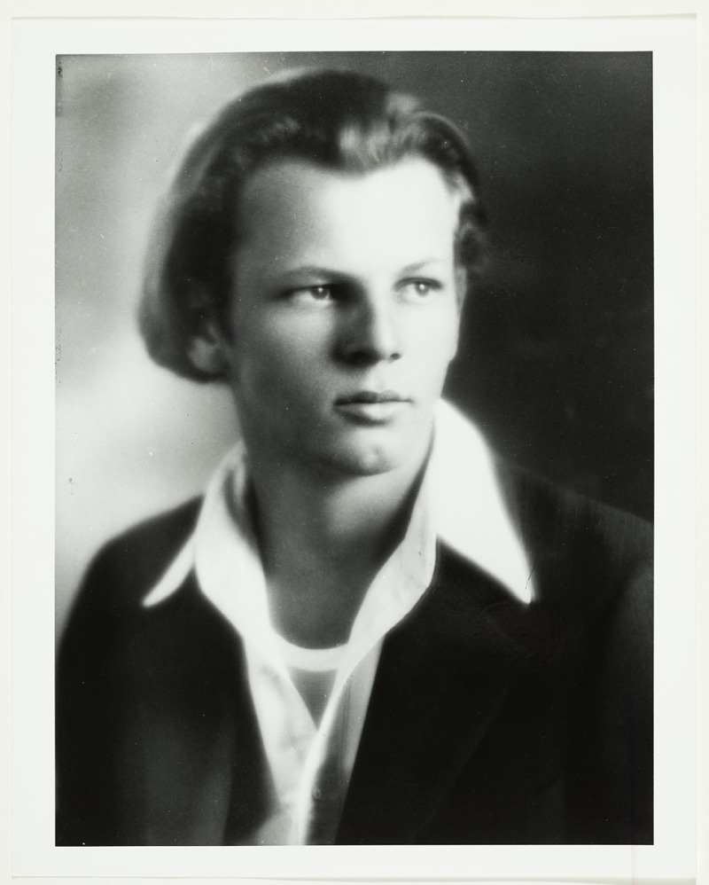

Vincent van Gogh
.jpg)
Vincent van Gogh was a Dutch post-Impressionist painter who is among
the most famous and influential figures in the history of Western
art. His bold colors and dramatic brushstrokes have inspired
generations of artists. Some of his most famous works include The
Starry Night, Sunflowers, and his series of self-portraits.
Pablo Picasso

Pablo Picasso was a Spanish painter, sculptor, printmaker, and
ceramicist who is considered one of the most important artists of
the 20th century. He is best known for co-founding the Cubist
movement and for his wide variety of artistic styles. Some of his
most famous works include Les Demoiselles d'Avignon, Guernica, and
The Weeping Woman.
Jackson Pollock

Jackson Pollock was an American painter and a major figure in the
abstract expressionist movement. He was well known for his unique
style of drip painting, in which he would fling, pour, and drip
paint onto large canvases placed on the floor. Some of his most
famous works include Number 1, 1950 (Lavender Mist), Blue Poles, and
Convergence.